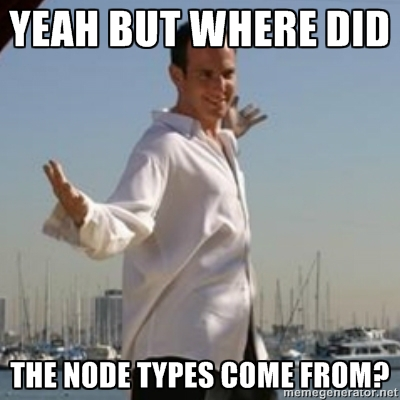

Static Analysis of Ruby
and
Security Scanning of Rails Apps with Brakeman
David Worth - dave@highgroove.com

Can I get a definition?
Static Analysis is the process of reasoning about programs without executing them, but rather through the act of parsing and algorithmically processing them.
Me (since I prefer this definition to The Wiki's)
Pop Quiz!
What Language is this?
Lisp?
Scheme?
Clojure?
... I would have accepted any.
Why (study, learn, like) Lisps?
... because they show that computers are Turing machines.
"data" and "code" are indistinguishable in Lisps because they are identically encoded "lists"
the hardcore Lispers in the crowd will call this "homoiconicity"
Shellcode
another great example of our Turing Machines
but shellcode is definitely not homoiconic either.
Ruby as an acceptable Lisp
Apologies to Steve Yegge but... I posit that Ruby is a perfectly acceptable Lisp.
Even if it lacks some cool Lisp-isms like macros and first-class functions.
Ruby fakes it well with things like define_method / instance_eval / class_eval / blocks, procs, and lambdas
and even though it lacks homoiconicity.
Abstract Syntax Trees
Without teaching a compilers class...
- an Abstract Syntax Tree (AST) is an internal representation used to represent a language
- used by a compiler as an intermediate representation between your code and the compiled machine code
- used by "interpreted"1 languages like Ruby or Python2 to instruct the execution environment (virtual machine) how to manipulate its state.
- These "interpreted" languages pretty much aren't anymore. Everything executes in a VM, and it's VMs/turtles all the way down.
- Python is complicated, has a byte-compiler, and I am out of my comfort zone talking about the nuts and bolts of it as a language.
Analyzing Ruby
Here's some everyday Ruby:
What the?
Who can tell me what this does?
Side by side with the original source it's much clearer what's going on:
AST Node Types in Ruby
How does ruby represent the||= operator?
It turns out with the :op_asgn_or node type so...
You could almost write code with every operator and manually extract the node types by observation
or...
Node types in Ruby's AST (con't)
By reading the Ruby source we can learn about the node types:
Lets do something interesting!
Find string interpolations using the Ruby Parser gem

Find string interpolations (con't)
Which gives us our old friend the s-expression
This is an S-Expression... also known as an array, which represents a tree.
We can simply walk down the tree making decisions based on node types
Find string interpolations (con't)
Walk the AST
Find string interpolations (con't)
Walk the AST, and we'll get back a list of interpolated strings as s-expressions
Find string interpolations (con't)
Walking the tree further to find "interpolation expressions" is very similar and produces
Find string interpolations (con't)
Walking the tree further to find "interpolation expressions" is very similar and produces
This is where the actual interpolation occurs
As we can see, we're interpolating the value of the local variable baz
Better S-Expression Parsing with SexpProcessor
SexpProcessor allows you to write handlers for each node type in the AST
Better S-Expression Parsing with SexpProcessor
SexpProcessor allows you to write handlers for each node in the AST:
Get you a stack
- Your Tool
- SexpProcessor
- RubyParser
- RACC
or...
source "https://rubygems.org" gem 'sexp_processor'
"This whole thing is impossible..."
Ruby has all sorts of things that get in our way:
- method_missing
- eval
These tools make automatic analysis of all programs very hard...
The good news is we can do "good enough" for lots of tasks.
Other cool uses of Static Analysis
- Flog / Flay
- Brakeman Scanner
- ... and more
Cool Uses of Static Analysis - Flog
From the README:"Flog reports the most tortured code in an easy to read pain report. The higher the score, the more pain the code is in."
Flog relies on static analysis via SexpProcessor
Cool Uses of Static Analysis - Flog (con't)
Flog assigns to each node of the AST various weighted penalties for complexity... the end of a run the "worst" (most complicated) methods are presented with their scores
Cool Uses of Static Analysis - Flog (con't)
Cool Uses of Static Analysis - Flay
From the README:"Flay analyzes code for structural similarities. Differences in literal values, variable, class, method names, whitespace, programming style, braces vs do/end, etc are all ignored. Making this totally rad.""
They mean it. That is rad.
Cool Uses of Static Analysis - Brakeman
A Static Analysis Security Scanner for Rails Applications
Why a security scanner just for Rails Apps?
Because of this guy:
Wait... who?
He kinda owned Github* but they were cool about it
oh, and he gained commit access to Rails core but didn't use it for Evil.
Types of Security Scanners:
-
Active Scanners
Active scanners operate on on a running application and attempt to discover and/or exploit vulnerabilities
- skipfish by Michael Zalewski
- Web Application Attack and Audit Framework (w3af)
-
Static Analysis Scanners
Attempt to discover
featuresvulnerabilities by analyzing an application at rest- Brakeman
- Gaggillions of others, primarily for "static" languages, but not for rails apps!
Introducing Brakeman
Brakeman
History and details:
- Released August 27, 2010 by Justin Collins aka PresidentBeef (@presidentbeef)
- Under constant development with many contributors from Big Cool Companies
- Understands Rails 2 and 3 with separate parsers for Ruby 1.8 and 1.9
So what does it do?
Finds 0-day in your apps before others do!
"Standard" web vulnerabilities
- XSS, CSRF, SQLi
- User-controlled data (Command Injection, unsafe redirects, dynamic render paths, "dangerous evaluation", file-access)
- Session and Authentication settings
Rails-specific vulnerabilities
- Mass-Assignment (aka the Github vulnerability)
- Unsafe/insufficient model validations
Most of these are covered in the Rails Security Guide and at length on the web as well as in the Brakeman docs
Does it work?
YEP!
At Highgroove a remote vulnerability was found on first running
... and patched 30s later.
How do I use it?
- Install the gem
~/rails_app $ gem install brakeman
- Run the scanner
~/rails_app $ brakeman [Notice] Detected Rails 3 application Loading scanner... [Notice] Using Ruby 1.9.3. Please make sure this matches the one used to run your Rails application. Processing application in /Users/dworth/Documents/my_projects/badapp Processing configuration... [Notice] Escaping HTML by default Processing gems... # ... SNIP ... Indexing call sites... Running checks in parallel... - CheckBasicAuth - CheckCrossSiteScripting # ... SNIP ...
How do I use it? (con't)
- Take action! Read the console:
+BRAKEMAN REPORT+ Application path: /Users/dworth/Documents/my_projects/badapp Rails version: 3.2.1 Generated at 2012-04-11 16:17:02 -0400 Checks run: BasicAuth, CrossSiteScripting, DefaultRoutes, # ... SNIP ... +SUMMARY+ +---------------------------------------------+ | Scanned/Reported | Total | +---------------------------------------------+ | Controllers | 2 | | Models | 1 | | Templates | 1 | | Errors | 0 | | Security Warnings | 2 (1) | | Ignored warnings due to annotations | 0 | +---------------------------------------------+ # ... SNIP ...
How do I use it? (con't)
- Take action! (con't)
- output to HTML
-f html -o brakeman_report.html
- output to HTML
Questions?
Thank You!
References
Brakeman on the web
Other Resources
Other cool tools using Static Analysis
(Sir Not-Appearing-In-This-Film)
-
Roodi - "Ruby Object Oriented Design Inferometer" Cyclomatic complexity checker for Ruby apps - i.e. the number of "linearly independent" paths through a program's source
-
Reek - a "Code smell detector for Ruby" Detects:
- functions with too many parameters
- poor variable naming: x, y, i, j, k
- and more...
Cyclomatic complexity checker for Ruby apps - i.e. the number of "linearly independent" paths through a program's source
Detects:
- functions with too many parameters
- poor variable naming: x, y, i, j, k
- and more...